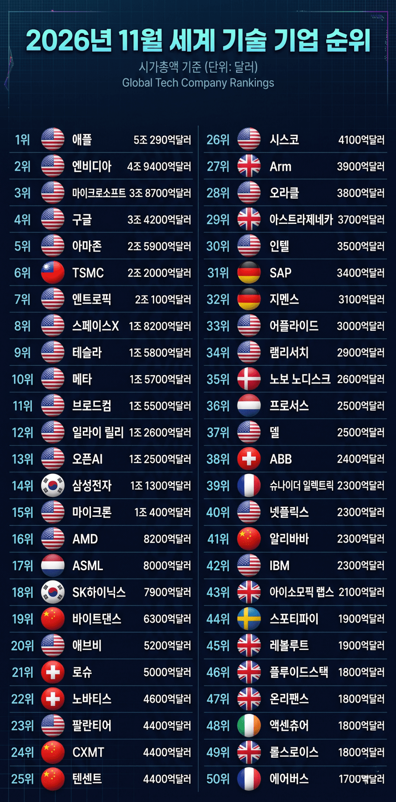

기술 기업이 없어 성장하지 못하고 GDP는 점점 떨어지고 국민들의 소득도 계속해서 줄어드는 일본.... 실제로 2026년 11월 기준 전세계 첨단 기술(반도체, AI, 소프트웨어, 생명공학, 항공우주, 각종 하드웨어 등) 기업 순위에서 일본 기업은 단 한개도 없는 상황 - dc official App출처: 이론 갤러리 [원본 보기]
댓글
댓글 보관 대기 중입니다. 원문 응답 오류가 있으면 다음 실행에서 다시 수집합니다.